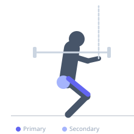
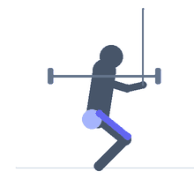

Exercise guide / Quarter Squat
Quarter Squat
The quarter squat limits knee flexion to approximately 25-30 degrees of travel, keeping the torso more upright and the load on the quadriceps near full extension. It is used for sport-specific power training (since most jumping and sprinting occurs in this partial range), for post-surgical rehabilitation where full depth is contraindicated, and for accommodating resistance training with bands or chains where supramaximal loads are used in the strongest portion of the lift.
Primary muscles
rectus femoris
vastus lateralis
vastus medialis
Secondary muscles
gluteus maximus
Stabilizers
erector spinae
transverse abdominis
Equipment
Standard Barbell
Power Rack (Squat Cage)


Starting position
- Set up as for a barbell back squat, with the bar on the upper back and feet shoulder-width apart.
Setup
- May use safety pins set high in the rack to limit depth, or use a box just above parallel as a guide.
Steps
- Step 1: Unrack the bar and stand with feet shoulder-width, toes slightly out.
- Step 2: Begin the descent by pushing the hips back and bending the knees.
- Step 3: Descend only until the knees reach approximately 25-30 degrees of flexion (about a quarter of full depth).
- Step 4: Drive upward through the full foot, extending the knees and hips to return to standing.
Coaching cues
- Knees track over toes
- Stay tall — chest up
- Drive the floor away
Breathing
- Inhale and brace before descent, exhale on ascent.
Range of motion
- Intentionally limited to ~25-30 degrees of knee flexion.
Tempo
- 1-0-1-0 for power; 2-0-2-0 for strength
Common mistakes
- Knees caving inward
- Heels rising off the floor
- Excessive forward lean of the torso
Safety
- The partial range concentrates high loads on the knees — ensure proper alignment
- Useful clinically but should not replace full squats for general training
Training
- power: 3–6 reps
- strength: 5–10 reps
- power: 4–6 sets
- strength: 3–5 sets
- Rest: {'strength': 180, 'hypertrophy': 90}